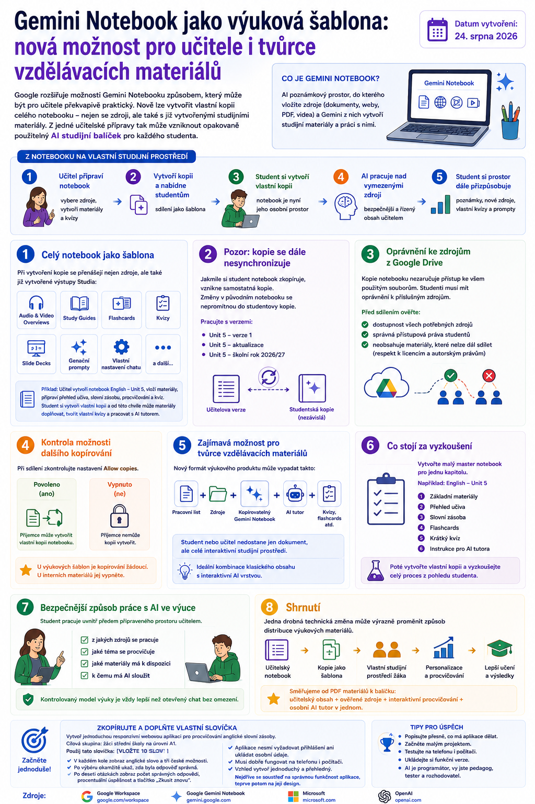

Google rozšiřuje možnosti Gemini Notebooku způsobem, který může být pro učitele překvapivě praktický. Nově lze vytvořit vlastní kopii celého notebooku, a to nejen se zdroji, ale také s již vytvořenými studijními materiály.

Z jedné učitelské přípravy tak může vzniknout opakovaně použitelný AI studijní balíček, který si každý student převezme do svého vlastního prostoru a dále s ním pracuje.
Celý notebook lze použít jako šablonu
Při vytvoření kopie Gemini Notebooku se nepřenášejí pouze vložené zdroje. Součástí kopie mohou být také vytvořené výstupy Studia, například:
- Audio a Video Overviews,
- Study Guides,
- flashcards,
- kvízy,
- Slide Decks,
- generační prompty,
- vlastní nastavení chatu.
Učitel tak může vytvořit například notebook English – Unit 5, vložit do něj potřebné materiály, připravit studijní přehled, slovní zásobu, procvičování a kvíz a následně celý notebook nabídnout studentům jako šablonu.
Každý student si vytvoří vlastní kopii a od této chvíle může:
- doplňovat vlastní poznámky,
- přidávat další zdroje,
- vytvářet vlastní kvízy,
- měnit způsob procvičování,
- používat AI nad připraveným souborem materiálů.
Původní učitelský notebook přitom zůstává nedotčený.
Z notebooku může vzniknout AI pracovní sešit
Tato změna je zajímavá hlavně z pedagogického hlediska.
Místo toho, aby student začínal v prázdném chatbotu a sám rozhodoval, z jakých informací bude AI čerpat, může učitel předem připravit bezpečnější a didakticky řízený prostor.
Workflow může vypadat například takto:
učitel vybere zdroje → připraví studijní materiály → student získá vlastní kopii → AI pracuje nad vymezenými zdroji → student si prostor dále personalizuje
Takový model se už mnohem více podobá digitálnímu pracovnímu sešitu s integrovaným AI tutorem než klasickému chatbotu.
Pozor: kopie se dále nesynchronizuje
Nová možnost má ale jedno důležité omezení.
Jakmile si student notebook zkopíruje, vznikne samostatná kopie. Pokud učitel následně v původním notebooku opraví chybu, přidá nový zdroj nebo změní kvíz, studentova kopie se automaticky neaktualizuje.
Při dlouhodobém používání proto bude potřeba počítat s verzemi, například:
- Unit 5 – verze 1,
- Unit 5 – aktualizace,
- Unit 5 – školní rok 2026/27.
Staré dobré verzování dokumentů tedy neumřelo. Jen dostalo AI kabát.
Oprávnění ke zdrojům z Google Drive
Další důležitou otázkou jsou přístupová práva.
Pokud notebook používá dokumenty uložené na Google Drive, student musí mít oprávnění k příslušným souborům. Samotné zkopírování notebooku automaticky neznamená, že získá přístup ke všem zdrojům.
Před distribucí notebooku studentům je proto vhodné ověřit:
- zda jsou všechny potřebné zdroje dostupné,
- zda mají studenti správná oprávnění,
- zda notebook neobsahuje materiály, které není možné dál sdílet.
To je důležité především u učebnic, pracovních sešitů a jiných materiálů chráněných autorským právem.
Kontrola možnosti dalšího kopírování
Při sdílení notebooku je vhodné zkontrolovat také nastavení Allow copies.
Pokud je kopírování povoleno, příjemce může vytvořit vlastní kopii notebooku. U výukových šablon je to samozřejmě žádoucí.
U interních materiálů nebo notebooků, které nechceme dále distribuovat, je ale vhodné tuto možnost vypnout.
Zajímavá možnost pro tvůrce vzdělávacích materiálů
Nový způsob sdílení může být zajímavý nejen pro školy, ale také pro tvůrce digitálních vzdělávacích materiálů.
Klasický výukový produkt dnes často tvoří:
PDF + pracovní list + prezentace
Do budoucna může vypadat třeba takto:
pracovní list + zdrojové materiály + kopírovatelný Gemini Notebook + AI tutor + flashcards + kvízy
Student nebo učitel by tedy nedostal pouze hotový dokument, ale celé interaktivní studijní prostředí.
Pro projekty typu Janinka Studio je to velmi zajímavý směr, zejména pokud budou vznikat materiály kombinující klasický tisknutelný obsah s interaktivní AI vrstvou.
Co stojí za vyzkoušení
Nejjednodušší experiment je vytvořit jeden malý master notebook pro jedinou kapitolu.
Například:
English – Unit 5
Do notebooku vložit:
- základní studijní materiály,
- přehled učiva,
- slovní zásobu,
- flashcards,
- krátký kvíz,
- instrukci pro AI tutora.
Poté vytvořit vlastní kopii notebooku a vyzkoušet celý proces z pohledu studenta.
Rychle se tak ukáže, zda lze Gemini Notebook využít jako praktický AI pracovní sešit ke konkrétnímu tématu.
Bezpečnější způsob práce s AI ve výuce
Z pedagogického pohledu je na této možnosti možná nejzajímavější právě to, že student nezačíná v prázdném AI chatu.
Učitel může předem určit:
- z jakých zdrojů se pracuje,
- jaké téma se procvičuje,
- jaké materiály má student k dispozici,
- k čemu má AI sloužit.
Student následně používá AI uvnitř tohoto připraveného prostoru.
To je podstatně kontrolovatelnější model než zadání „otevřete si chatbot a zeptejte se ho“.
Shrnutí
Možnost kopírovat celý Gemini Notebook může na první pohled působit jako drobná technická funkce. Pro vzdělávání však otevírá velmi zajímavý způsob distribuce výukových materiálů.
Z jednoho učitelského notebooku může vzniknout opakovaně použitelná šablona, kterou si každý student převezme, přizpůsobí a dále používá jako vlastní studijní prostředí.
Pokud se tento způsob práce osvědčí, můžeme se postupně dostat od klasických PDF materiálů k mnohem zajímavějšímu modelu:
učitelský obsah + ověřené zdroje + interaktivní procvičování + osobní AI tutor v jednom balíčku.
A právě to je směr, který stojí před školním rokem 2026/27 za praktické otestování.
Zdroje
Google Workspace · Google Gemini Notebook · Microsoft · OpenAI.